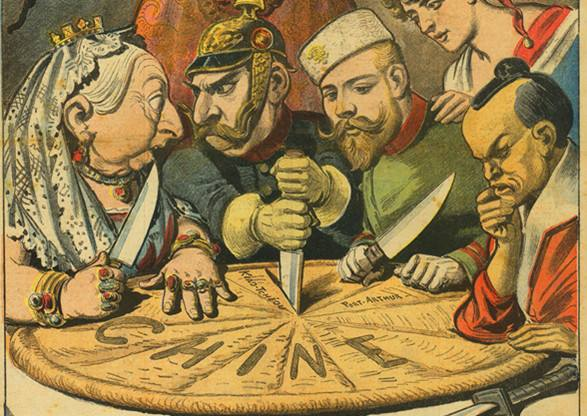

¡Saludos estimados participantes! Bienvenidos al curso online sobre Descolonización. Soy Bruno Abreu, estudiante de profesorado de Historia en el CeRP del Litoral y autor del presente curso.
En los próximos días estaremos compartiendo una instancia académica en modalidad virtual, en donde trabajaremos conocimientos específicos de la Historia. El presente curso se enmarca en la propuesta de trabajo de la asignatura Informática Educativa, a cargo del profesor Jorge Cheriff. Por lo tanto, se trata de una actividad en la que pondré en práctica los conocimientos que he adquirido en el proceso de formación docente, tanto en el área específica como en el manejo de herramientas tecnológicas para el trabajo desde la distancia (adquiridos en el curso de informática).
